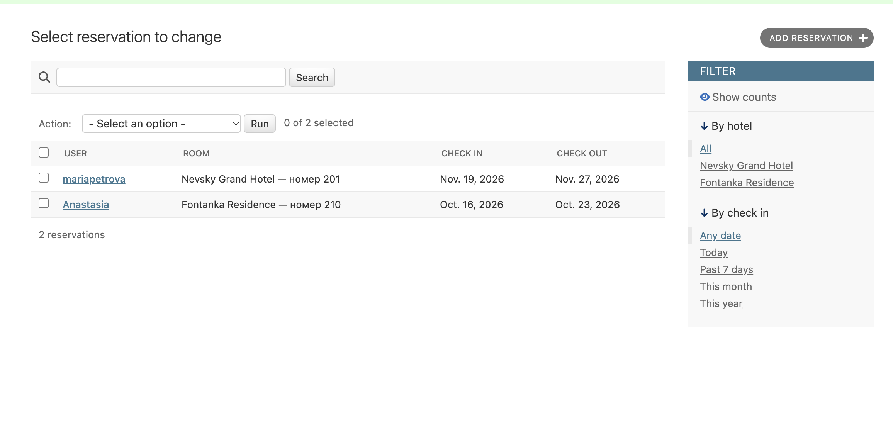
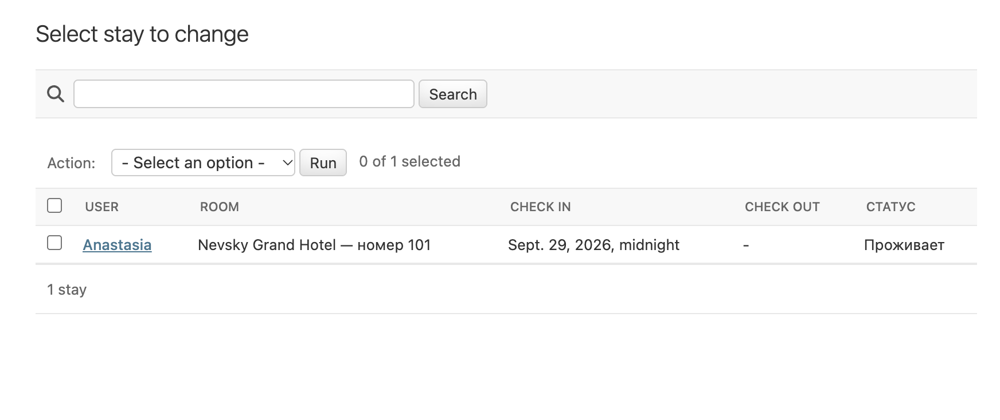

Работа администратора
Django Admin
Административная часть доступна по адресу /admin/. В ней зарегистрированы Hotel, RoomType, Amenity, Room, Reservation, Review и Stay. Доступ к данным зависит от прав аккаунта. Суперпользователь может управлять всеми этими записями.
В списке бронирований показаны пользователь, номер и даты. Есть поиск по имени пользователя и номеру комнаты, а также фильтры по отелю и дате заезда.
Сценарий заселения:
- Пользователь создаёт бронирование на сайте.
- Администратор открывает список
Reservation. - Отмечает нужную запись.
- Выбирает действие «Заселить» (
check_in_guests) и запускает его. - Создаётся запись
Stayс пользователем и номером из бронирования. Время заселения устанавливается на 00:00 даты заезда.
Если для этого пользователя и номера уже есть незавершённое проживание или запись с тем же временем заезда, действие пропускает бронирование. Существующая запись не обновляется.
Для выселения администратор открывает список Stay, отмечает проживание и выбирает «Выселить» (check_out_guests). У незавершённых проживаний, которые уже начались, check_out получает текущую дату и время. Уже завершённые записи не меняются.
В списке Stay виден статус «Проживает» или «Завершено». Можно искать по имени пользователя и номеру комнаты, фильтровать по номеру, отелю, дате заселения и наличию даты выселения.

Рисунок 6 — Бронирования в Django Admin

Рисунок 7 — Проживания в Django Admin
Разграничение прав в клиентской части
Просмотр номеров доступен без входа. Для бронирования, отзывов и управления своими бронированиями нужен вход в аккаунт.
Ссылка «Постояльцы» в base.html показана только при user.is_staff. Представление recent_guests также проверяет этот признак. При прямом переходе обычного пользователя на /guests/ он возвращается к списку номеров.